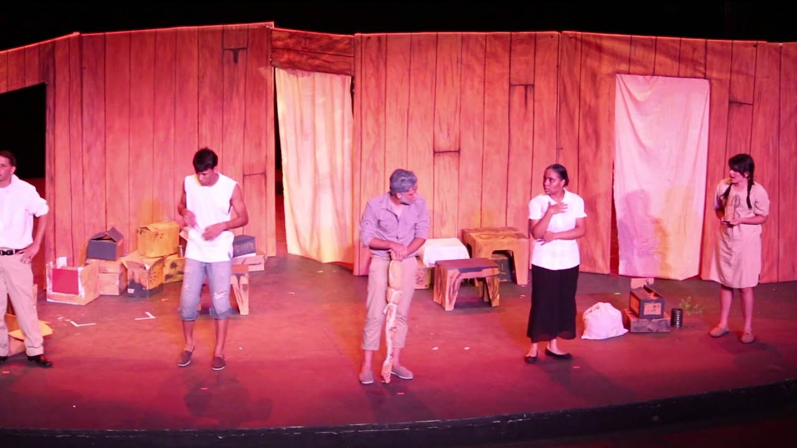
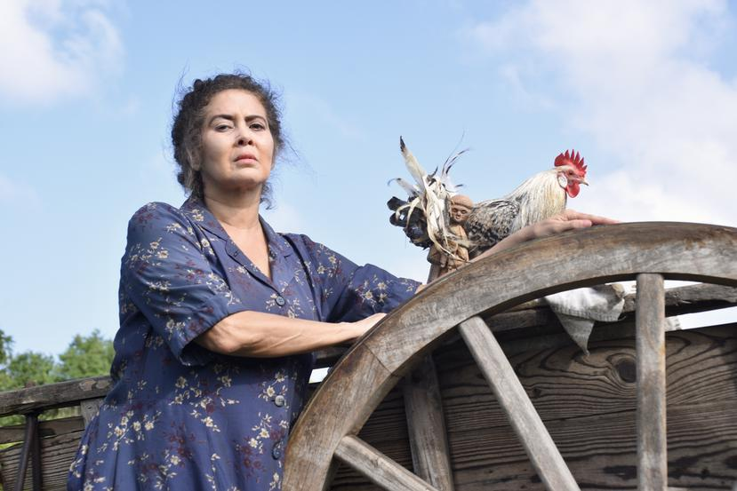
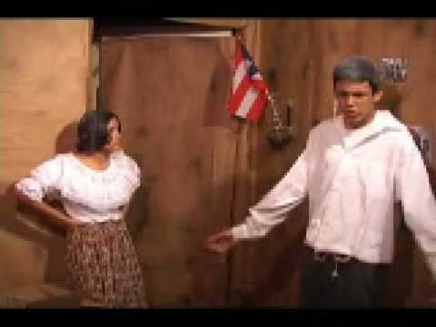
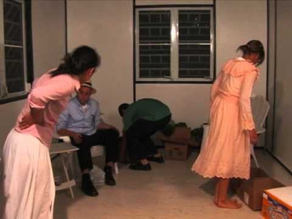
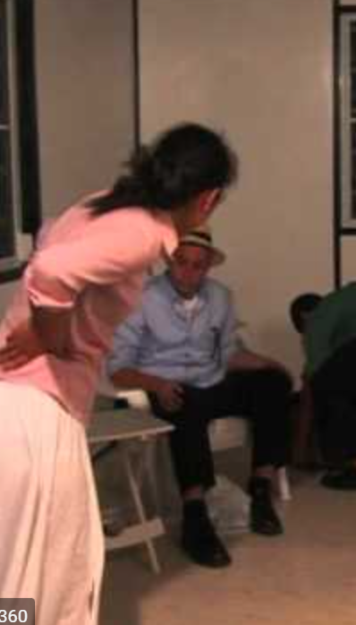

Personajes

Los personajes de la obra "La Carreta" son las siguientes:
Doña Gabriela: viuda de 50 años que es el centro vital de la familia. Es un personaje de carácter fuerte, pero una madre cariñosa para todos. Ella tiene 3 hijos, los dos menores procreados por ella y madrastra del mayor, Luis.

Chaguito: joven de 15 años, hijo menor de Doña Gabriela. Extremadamente agresivo y travioso. Tanto que fue para la cárcel por robar.

Juanita: joven de 19 años, hija de Dona Gabriela. Se convierte en un personaje fuerte porque fue violada y quedó embarazada. Intentó suicidarse y eventualmente se convirtió en una prostituta.

Don Chago: el abuelo de la familia con 73 años de edad. Ama el campo y sus tierras.

Luis: joven de 24 años, hijo mayor y adoptado por Dona Gabriela. El “líder” de la familia porque siempre trata de conseguir lo mejor para la familia. Moviéndose a diferentes lugares para tratar de tener una vida mejor. Sin embargo, muere por un accidente en su lugar de trabajo al final de la novela.
Personajes Secundarios:
Germana: comadre del barrio.
Litio: niño de 9 años que vivía solo en la Perla.
Paco: escritor que le propone matrimonio a Juanita pero ella lo rechaza.
Doña Isa: señora respetada del barrio la cual ayuda a la familia a mudarse para Nueva York.
Matilde: personaje vulgar
Lidia: una madre joven que es vecina de Luis en Bronx, Nueva York.
Mr. Parkington: ministro americano de una iglesia protestante en el Bronx.